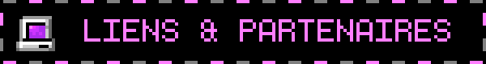

Un grand merci aux entreprises et sous-traitants qui ont permis la construction de notre magnifique Parchaïque!
Le Webmaster.
>> ANNEAU DU WEB (WEBRING) <<

Langage et Cœur du jeu :
- Python 3 : Langage de programmation principal.
- Bibliothèques standards Python : socket, threading, json, queue (utilisées pour l'architecture réseau multi-threadée), os, math, random.
Bibliothèques Externes (Dépendances) :
- Pygame : Moteur graphique et sonore du jeu.
- PyTMX : Bibliothèque utilisée pour le parsing et le rendu de notre carte générée via Tiled (map.tmx).
- PyPresence : Permet l'intégration du Discord Rich Presence, affichant l'état du joueur en temps réel sur son profil Discord.
Logiciels et Outils Tiers :
- Tiled Map Editor : Conception du niveau, placement des collisions et des zones d'apparition des entités.
- Inno Setup : Création de l'assistant d'installation et de désinstallation pour Windows.
- Git / GitLab : (Précise ce que vous utilisez) pour le versionning et le travail collaboratif.
- Discord : pour la communication entre les membres.
Ressources Artistiques (Banques d'images et de sons) :
- Graphismes (Sprites, Décors, UI) : Créés en interne par l'équipe.
- Assets (Map) : Provenant de Craftpix [CC0].
- Bruitages (SFX) : Provenant de Kenney [CC0].
- Musiques : Composées par Raine et Millenium683 exclusivement pour le projet.
C:\PARCHAIQUE_SERVER\LOGS\DEPENDANCES.TXT
CHARGEMENT DES LIBRAIRIES EXTERNES...
[OK] Librairie...
[OK] Librairie...
VERIFICATION DES ARCHIVES BIBLIOGRAPHIQUES...
- ...
- ...
- ...
WARNING: MEMORY LEAKS -- 2408 bytes
CONNEXION LOST... POINTER TO 0x000000F
Site optimisé pour Netscape Navigator 4.0 et Internet Explorer 5. Résolution 800x600.